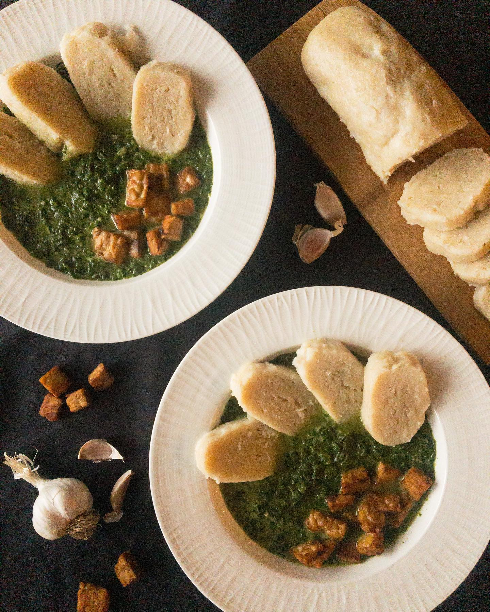

Dusený špenát podľa @filouska_food — Normy Jedál
Špenát s tempehem
Spinach with tempeh (English in comments 👇🏻)
*
Nejoblíbenější jídlo známého animovaného svalovce? Žádné maso, ale špenát Pepka námořníka! 💪🏻 #var_rychle #vychutnavej_pomalu
*
Recept najdete také na mých FB stránkách ‘Filouska v kuchyni’ - odkaz v biu.
*
Jestli se vám recept líbí, nezapomeňte mu dát like ❤️ nebo si ho uložit, případně mě označit, jakmile ho vyzkoušíte.
*
Špenát s tempehem
SUROVINY:
• 500 g mraženeho špenátu
• 1 hrnek rostlinného mléka
• rostlinný olej
• 3-4 stroužky česneku
• černá sůl (dodává vajíčkovou chuť, ale lze použít běžnou sůl), pepř
• uzený/marinovaný tempeh
*
POSTUP:
1. Na drobno nakrájený česnek si osmahneme na trošce oleje.
2. Přidáme špenát, zalijeme rostlinným mlékem a necháme provařit.
3. Ochutíme solí a pepřem.
4. Tempeh si nakrájíme na kostičky a osmahneme na trošce oleje.
*
Dobrou chuť!